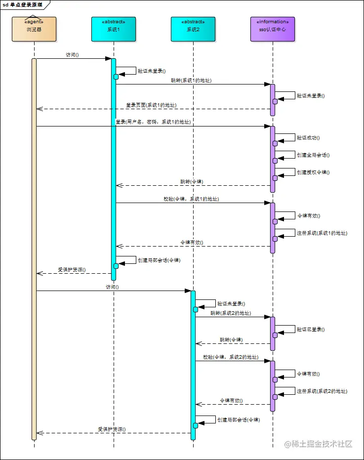

常见鉴权方式
- session、cookie
- token
- 单点登录
- OAuth
session-cookie
这个方式是利用服务器端的session（会话）和浏览器端的cookie来实现前后端的认证，由于http请求时是无状态的，服务器正常情况下是不知道当前请求之前有没有来过，这个时候我们如果要记录状态，就需要在服务器端创建一个会话(session),将同一个客户端的请求都维护在各自得会会话中，每当请求到达服务器端的时候，先去查一下该客户端有没有在服务器端创建session，如果有则已经认证成功了，否则就没有认证。
验证流程
- 服务器在接受客户端首次访问时在服务器端创建session，然后保存session(我们可以将session保存在内存中，也可以保存在redis中，推荐使用后者)，然后给这个session生成一个唯一的标识字符串,然后在响应头中种下这个唯一标识字符串。
- 签名。这一步只是对sid进行加密处理，服务端会根据这个secret密钥进行解密。（非必需步骤）
- 浏览器中收到请求响应的时候会解析响应头，然后将sid保存在本地cookie中，浏览器在下次http请求的请求头中会带上该域名下的cookie信息，
- 服务器在接受客户端请求时会去解析请求头cookie中的sid，然后根据这个sid去找服务器端保存的该客户端的session，然后判断该请求是否合法。
弊端
- 服务器内存消耗大: 用户每做一次应用认证,应用就会在服务端做一次记录,以方便用户下次请求时使用,通常来讲session保存在内存中,随着认证用户的增加,服务器的消耗就会很大.
- 易受到CSRF攻击: 基于cookie的一种跨站伪造攻击, 基于cookie来进行识别用户的话,用户本身就携带了值,cookie被截获,用户就很容易被伪造
token
token是用户身份的验证方式，我们通常叫它：令牌。当用户第一次登录后，服务器生成一个token并将此token返回给客户端，以后客户端只需带上这个token前来请求数据即可，无需再次带上用户名和密码。
最简单的token组成:uid(用户唯一的身份标识)、time(当前时间的时间戳)、sign(签名，由token的前几位+盐以哈希算法压缩成一定长的十六进制字符串，可以防止恶意第三方拼接token请求服务器)。还可以把不变的参数也放进token，避免多次查库。
我们可以把Token想象成一个安全的护照。你在一个安全的前台验证你的身份（通过你的用户名和密码），如果你成功验证了自己，你就可以取得这个。当你走进大楼的时候（试图从调用API获取资源），你会被要求验证你的护照，而不是在前台重新验证。
验证流程
- 客户端使用用户名跟密码请求登录
- 服务端收到请求，去验证用户名与密码
- 验证成功后，服务端会签发一个 Token，再把这个 Token 发送给客户端
- 客户端收到 Token 以后可以把它存储起来，比如放在 Cookie 里或者 Local Storage 里
- 客户端每次向服务端请求资源的时候需要带着服务端签发的 Token
- 服务端收到请求，然后去验证客户端请求里面带着的 Token，如果验证成功，就向客户端返回请求的数据
优缺点
优点：
- Token 完全由应用管理，所以它可以避开同源策略. (Cookie是不允许垮域访问的,token不存在)
- Token 可以避免 CSRF 攻击(也是因为不需要cookie了)
- Token 可以是无状态的，可以在多个服务间共享
- Token 支持手机端访问(Cookie不支持手机端访问)
缺点：
- 占带宽: 正常情况下token要比 session_id更大，需要消耗更多流量，挤占更多带宽.(不过几乎可以忽略)
- 性能问题: 相比于session-cookie来说，token需要服务端花费更多的时间和性能来对token进行解密验证.其实Token相比于session-cookie来说就是一个”时间换空间”的方案
单点登录
单点登录（Single Sign On），简称为 SSO，是目前比较流行的企业业务整合的解决方案之一。SSO的定义是在多个应用系统中，用户只需要登录一次就可以访问所有相互信任的应用系统。
SSO一般都需要一个独立的认证中心（passport），子系统的登录均得通过passport，子系统本身将不参与登录操作，当一个系统成功登录以后，passport将会颁发一个令牌给各个子系统，子系统可以拿着令牌会获取各自的受保护资源，为了减少频繁认证，各个子系统在被passport授权以后，会建立一个局部会话，在一定时间内可以无需再次向passport发起认证
实现方式
- session广播机制实现
- 在一个集群中的一个模块登录后，然后把这个session复制n份，发送到这个集群的其他模块中，就实现了一处登录，处处可用，但缺点是耗费比较大，不推荐使用
- 使用cookie+redis实现
- 在项目中任何一个模块登录，登录之后，把数据放到这两个地方
- redis：在key：生成唯一随机值（ip、用户id等等） ，在value：用户数据
- cookie：把redis里面生成key值放到cookie里面
- 访问项目中其他模块，发送请求带着cookie进行发送，获取cookie值，拿着cookie做事情
- 使用token实现(推荐使用)
登录流程

- 用户访问系统1的受保护资源，系统1发现用户未登录，跳转至sso认证中心，并将自己的地址作为参数
- sso认证中心发现用户未登录，将用户引导至登录页面
- 用户输入用户名密码提交登录申请
- sso认证中心校验用户信息，创建用户与sso认证中心之间的会话，称为全局会话，同时创建授权令牌
- sso认证中心带着令牌跳转会最初的请求地址（系统1）
- 系统1拿到令牌，去sso认证中心校验令牌是否有效
- sso认证中心校验令牌，返回有效，注册系统1
- 系统1使用该令牌创建与用户的会话，称为局部会话，返回受保护资源
- 用户访问系统2的受保护资源
- 系统2发现用户未登录，跳转至sso认证中心，并将自己的地址作为参数
- sso认证中心发现用户已登录，跳转回系统2的地址，并附上令牌
- 系统2拿到令牌，去sso认证中心校验令牌是否有效
- sso认证中心校验令牌，返回有效，注册系统2
- 系统2使用该令牌创建与用户的局部会话，返回受保护资源
用户登录成功之后，会与sso认证中心及各个子系统建立会话，用户与sso认证中心建立的会话称为全局会话，用户与各个子系统建立的会话称为局部会话，局部会话建立之后，用户访问子系统受保护资源将不再通过sso认证中心，全局会话与局部会话有如下约束关系
局部会话存在，全局会话一定存在
全局会话存在，局部会话不一定存在
全局会话销毁，局部会话必须销毁
销毁

- 用户向系统1发起注销请求
- 系统1根据用户与系统1建立的会话id拿到令牌，向sso认证中心发起注销请求
- sso认证中心校验令牌有效，销毁全局会话，同时取出所有用此令牌注册的系统地址
- sso认证中心向所有注册系统发起注销请求
- 各注册系统接收sso认证中心的注销请求，销毁局部会话
- sso认证中心引导用户至登录页面
OAuth
类似微信授权登录
OAuth在”客户端”与”服务提供商”之间，设置了一个授权层（authorization layer）。”客户端”不能直接登录”服务提供商”，只能登录授权层，以此将用户与客户端区分开来。”客户端”登录授权层所用的令牌（token），与用户的密码不同。用户可以在登录的时候，指定授权层令牌的权限范围和有效期。
“客户端”登录授权层以后，”服务提供商”根据令牌的权限范围和有效期，向”客户端”开放用户储存的资料。
OAuth2.0